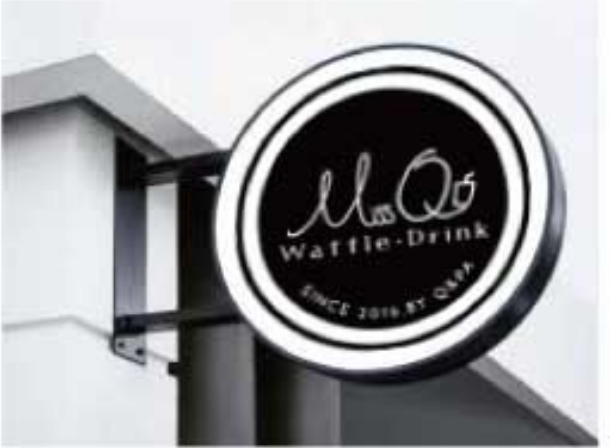
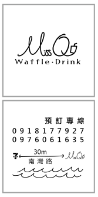
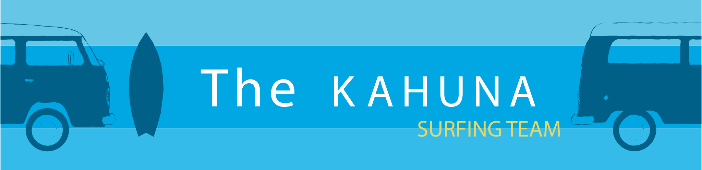

業主是兩個女生一起經營,項目鬆餅跟飲品,地點在墾丁南灣,店面是很純粹的工業風,這種風格表示會有很多原木色&水泥灰&鑄鐵色,比例大概3:3:0.5, 整體的重點就是同心協力的品牌概念,搭配工業風格,可愛感這三點,這樣之後在實際應用上會比較方便
大部分遇到工業風其實比較少跟可愛或俏皮感連結在一起,在這裡採取的原則是利用黑色基底跟整體風格融合在一起, 利用柔和的書寫線條抵銷掉剛硬的感覺,為工業風帶進一些柔和的女性特質
"M"感覺很顯眼吧??就像兩個人並肩走在一起的樣子,業主是兩個感情很好的事業夥伴兼好朋友,算是這間店最核心的價值所在,剛好有"M"這個字體可以發揮,延續書寫體的流暢感做一些變化就完成這個部分
這裡有個小細節~~因為想要增加粗獷感所以很多線條被我刻意"搓"的不規則
這個"Q"算是可愛感的亮點,其他的細節都在這裡做一個整合
這個字體,我覺得有一種特殊的樸實感,跟兩位業主散發出的氣質非常搭配,辨識度夠,做一點變化增加手寫感剛好呼應miss Q
圖稿完成時店面尚未準備好,實際應用大概如上圖
名片的實際做法很陽春喔~~就是買紙自己裁再用印章蓋上去,所以不能有太複雜的線條,地址直接用圖示"南灣路上過小7走30公尺"店面前實際上就是南灣海灘喔～～所以就直接用海浪
